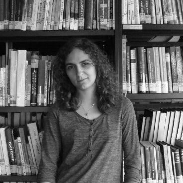

The R Consortium recently spoke with the organizing team of the R User Group at the University of Manchester (R.U.M.). R.U.M. aims to bring together R users of all levels to share R best practices, expertise and knowledge. The group is open to all staff and postgraduate researchers at the University of Manchester, UK.
During the discussion, the team shared details about their recent events and their plans for this year. They also discussed the latest trends in the R programming language and how they are utilizing it in their work.

Martín Herrerías Azcué
Research Software Engineer
University of Manchester

Anthony Evans
Research Software Engineer
University of Manchester

Lana Bojanić
Researcher PhD Candidate
University of Manchester
Rowan Green
PhD Student in Evolutionary Microbiology
The University of Manchester
Please share about your background and involvement with the RUGS group.
Martin: My name is Martin, and I joined the University of Manchester a year ago. They assigned me to manage the R user group, which was previously under Camila’s leadership. Although I am officially in charge, this is a collaborative effort between all of us who are present in this meeting, along with some others who couldn’t join. I work in Research IT and mainly use R for projects assigned to me by other people.
Anthony: My name is Anthony and I work at Research IT with Martin at the University of Manchester. I first came into contact with R when I was a student. Later, I became a helper at many of the university’s R training courses based on the Carpentries training courses. Camila, who was Martin’s predecessor, was also a trainer at R and she formed the R Users Manchester group. I volunteered to help her with the group a year ago, and it just turned a year old. After that, I continued to be a part of the group.
Lana: Hi there, my name is Lana. I am a PhD student and research assistant at the Division of Psychology and Mental Health at the University of Manchester. I have been using R for the past six years, ever since my Master’s degree. I have been a part of the group since its inception and have been running R introduction sessions for beginners within my division for a couple of years now. When I learned the group was being formed, I contacted Camila a year ago. This makes us founding members of the group.
Rowan: Hello, my name is Rowan Green. I am currently a PhD student in the Department of Earth and Environmental Sciences. For my research work, I use R extensively for simulation modeling bacteria, analyzing lab data, and creating visualizations. The best thing about using R is that it produces much prettier visualizations than other options available to us as biologists. We have a lot of master’s and undergraduate students coming through the lab. I often give them pre-written scripts they can tweak to create their plots. It’s exciting to see them working hard to produce their plots.
Camilla mentioned starting a group to share knowledge about R on a university-wide level. I found this a great opportunity to participate and learn from others’ presentations during the meetings. It has been an enriching experience so far.
Can you share what the R community is like in Manchester?
Anthony: In industries such as banking and finance, R is frequently used to create graphs to showcase econometric data in an easy-to-understand manner. The graphical capabilities of this programming language make it a popular choice in these fields. The university we’re in has access to the Financial Times, which is known for producing visually stunning graphs. Interestingly, they also use an R package called FT plot tools, which is a specialized package solely for their use. So, it’s safe to say that R has a significant presence in the banking and finance sectors.
Are your meetups virtual or in-person? What topics have you covered recently? What are your plans for the group in the future?
Martin: Our events are a mix of in-person and online meetings. There have been talks about developing packages, data visualization, automating reports, and working with tables. We usually cover topics we are confident about or know people from the university are working on. However, we are also trying to get external speakers to come and talk. It’s challenging, but we are doing our best to make it happen. We are currently accepting proposals from potential speakers.
Our book club has mostly or completely taken place online.

Lana: Bookclub was mostly online. During the summer book club, we were reading R for Data Science. We covered a chapter or two chapters each time. We had the book’s second edition, and people from all over the university joined the club.
We were discussing the possibility of changing the format of Tidy Tuesdays. We received feedback that people don’t have enough time to come up with something extra creative every month. Additionally, there has been a need for more practice. Therefore, we plan to redesign Tidy Tuesdays to be more practice-oriented than creativity-oriented. We will be implementing these changes this year.
Anthony: We’ve recently had several discussions on useful packages, particularly in R. Some packages that were developed and published were custom-made. We also had presentations on the cosinor and cosinor2 packages, which are used for fitting curves, and an R update package for validating clinical prediction models.
There are two other R groups in Manchester. Our aim for this year is to establish communication with them and collaborate in a coordinated manner. (Editor’s Note: We recently talked with the Manchester R User Group.) Currently, our group solely focuses on the internal R community at the University of Manchester.
Any techniques you recommend using for planning for or during the event?
Rowan: I’m not sure if everyone would agree with me, but I think we did well in the format of our meetings. We started with brief, brief talks – within an hour – followed by questions and discussions, which worked well.
However, the harder part has been promoting and informing people about the meetings. Sometimes, word of mouth has been more effective than emails and posters. I noticed that they were interested in attending when I encouraged my lab group, who all use R. But without any scheduled reminders and someone to encourage them, it may be difficult to get people to come.
Lana: It’s important to identify everyone’s strengths or specialties within the organizing group, as they will probably be useful in the first few events. After that, you can expand your network within the community, which is easy to do since people are easily reachable. This will allow you to find interesting topic ideas and strengths to draw from.
What trends do you currently see in R language?
Martin: I’ve noticed a growing interest in Shiny lately, as I manage a pilot server for the university and have seen an increase in users over time. There have also been several inquiries about using R within our high-performance computer cluster, which may be something we can offer to the university. This interest is not surprising, given the current hype around machine learning.
A trending area that applies to multiple platforms, not just R, is towards reproducible research and compatibility between different programming languages. This means that R can be integrated with Python and other languages to create a documented and integrated pipeline. I’ve been experimenting with SnakeMake, which works well with R, but it would be great to see more integration from the R side, perhaps through the common workflow language or another similar tool.
Please share about a project you are currently working on or have worked on in the past using the R language. Goal/reason, result, anything interesting, especially related to the industry you work in?
Rowen: Recently, I wrote a preprint of a paper where we simulated the growth and mutation of bacteria using differential equations and R programming language. To perform the simulation, we utilized high-performance computing, which enabled us to simulate various ways the bacteria could grow by adjusting the rates of reactions occurring within the cells. This simulation required high-performance computing to be feasible for running multiple simulations.
After running simulations, we came up with some ideas to test in the lab. Our focus was on measuring mutation rates, and we used statistical analysis to estimate them through R. We have been striving to ensure reproducibility, and as a result, we have annotated all the data tables and R scripts with the paper.
It has been an interesting journey for me. I had to tidy up my messy scripts and think about how someone else would perceive them. I had to ensure they made sense. However, the project was fascinating as I generated hypotheses using R, tested them, and analyzed and visualized them with the same tool. R is a complete tool that can handle all aspects of the process, making it a brilliant choice.
How do I Join?
R Consortium’s R User Group and Small Conference Support Program (RUGS) provides grants to help R groups organize, share information, and support each other worldwide. We have given grants over the past four years, encompassing over 68,000 members in 33 countries. We would like to include you! Cash grants and meetup.com accounts are awarded based on the intended use of the funds and the amount of money available to distribute.